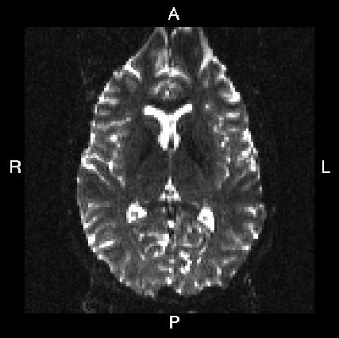
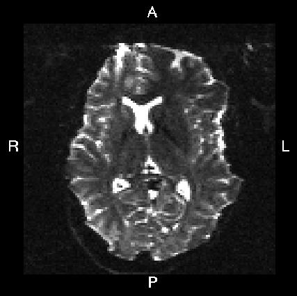
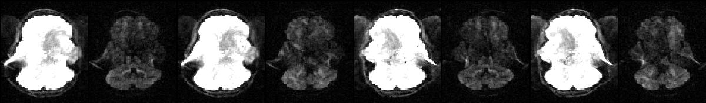
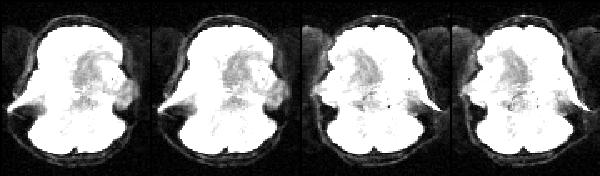

Contents
How do I know what to put into my --acqp file?
The --acqp file is of the same format as the --datain parameter for topup, and quite possibly you can re-use the one you created for topup. It is used to inform eddy what direction the distortions are likely to go in. Each row consists of a vector (three values) that specify what the phase-encode (PE) axis is and also what direction along that axis that imply higher frequency. So for example the two lines
0 1 0 0.085
0 -1 0 0.085
have the vectors [0 1 0] and [0 -1 0] which both imply that PE is along the y-direction and which further imply that for the first row [0 1 0] a higher frequency is associated with a position higher up along the y-direction (i.e. positive blips) and the second [0 -1 0] implies that a lower frequency is associated with a position higher up (i.e. negative blips).
The fourth element in each row is the time (in seconds) between reading the center of the first echo and reading the center of the last echo. It is the "dwell time" multiplied by "number of PE steps - 1" and it is also the reciprocal of the PE bandwidth/pixel.
For a Siemens scanner you will get a "protocol PDF" that contains all the relevant information. Look for the tags "Phase enc. dir.", "Echo spacing" and "EPI factor". Here is an example
Phase enc. dir. A >> P
...
Echo spacing 0.8 [ms]
...
EPI factor 128
Where the first tag tells us that more posterior (lower down in the y-direction) locations are associated with higher frequency meaning that our vector should be [0 -1 0] and where the second two tags tells us that the fourth number should be 0.8*0.001*127=0.102 resulting in
0 -1 0 0.102
as the row for our --acqp file.
I am afraid that I don't have sufficient experience of the other scanner manufacturers to know how/where the relevant information is stored.
Does it matter what I put into my --acqp file?
Almost not at all, as long as the same file is used for both topup and eddy.
Let us for example say that the "true" file should be
0 1 0 0.05
0 -1 0 0.05
but that we happen to use one that looks like
0 -1 0 0.1
0 1 0 0.1
instead. Surely that must be disastrous? No, in fact the results would be indistinguishable from each other.
The sign-swap for the PE-directions would mean that topup would sign-swap the entire field so that areas with higher field will look like they have a lower field, and vice versa. The twice as large "readout time" means that topup will underestimate the field by a factor 2. Hence, the estimated field will be sign-swapped and underestimated, which on the surface sounds like a bad thing.
But now we enter that field into eddy with the --topup parameter and also the "fault" --acqp file. The sign-swap in the field and in the --acqp file will now cancel out by being multiplied together, so the displacements will still go in the correct direction. Similarily, the field is underestimated by a factor 2, but that is counteracted by a twice as large "sensitivity" to off-resonance indicated by the too large readout time. So the magnitude of the displacements is also correct.
There are some special cases where it matters to get the --acqp file right, but unless you know exactly what you are doing it is generally best to avoid those cases. They would be
If you acquire data with PE direction along two different axes (i.e. the x- and y-axis). In that case you need to get the signs right for the columns indicating the PE. But you can always use trial and error to find the correct combination.
- If you acquire data with different readout times. In that case you need at the very least to get the ratio between the times right.
If you use a non-topup derived fieldmap, such as for example a dual echo-time gradient echo fieldmap, that you feed into eddy as the --field parameter. In this case you need to get all signs and times right, both when creating the field (for example using prelude) and when specifying its use in eddy through the --acqp.
If your data is not one of those special cases, and you don't have a specific interest in the off-resonance field per se, you can make life very easy for you. Run a movie (for example using fslview or FSLeyes) of the 4D file you plan to enter into topup. Does the brain jump up and down? If so, use
0 1 0 0.05
0 -1 0 0.05
Does the brain bounce from side to side? If so, use
1 0 0 0.05
-1 0 0 0.05
Is the brain essentially still? If so, there has probably been a mistake in the acquisition and both images have been acquired with the same phase-encoding. In that case you cannot use topup.
What if I still really want to have an "accurate" --acqp file?
If you are one of the special cases, or you just really would like to see what the "true" off-resonance field is, here is an --acqp for dummies:
What you see in FSLVIEW |
 |
|
|
 |
In Siemens protocol |
Phase enc. dir. P >> A |
Phase enc. dir. A >> P |
Phase enc. dir. R >> L |
Phase enc. dir. L >> R |
In --acqp file |
0 1 0 0.095 |
0 -1 0 0.095 |
1 0 0 0.122 |
-1 0 0 0.122 |
Faq/A_2_P.jpg "A_2_P.jpg")
Faq/R_2_L.jpg "R_2_L.jpg")
Why do I need more than two rows in my --acqp file?
First of all, all the information below is correct. But as of the release of the FSL 5.0.9. eddy patch (here) it is also a little less relevant. The reason for that is that as of that version eddy will start by rigid-body registering all the b=0 and then linearly interpolate the movement parameters from those to the diffusion weighted images. If the b=0 volumes are interspersed among the diffusion images this works really well even in the presence of large subject movements. Hence, it is now quite rare that eddy needs the kind of help that the multiple --acqp rows offer.
Let us say you have data that has only been collected in two different ways (e.g. R->L and L->R) but your --datain file from topup contains four rows. Why do I need four rows? Should not two rows be sufficient to describe the two ways that my data was collected in?
The reason that more than two rows can be useful is that it is a way of feeding information from topup to eddy. Let us say we have collected two b=0 and two dwis each for R->L and L->R (which is of course silly, but used here to save space)

Let us further say you used fslroi and fslmerge to create a file my_b0.nii.gz with only the b=0 scans

In order to run topup on this we create a --datain file (that we call parameters.txt) which consists of
-1 0 0 0.051
-1 0 0 0.051
1 0 0 0.051
1 0 0 0.051
since topup expects one line per volume. The output from topup consists of an estimate of the susceptibility induced field that caused the distortions and also an estimate of the position of each of the b=0 scans relative the first one. It is necessary for topup to simultaneously estimate the field and the subject movement as the latter may otherwise affect the estimation of the field. If the --out parameter in the topup call was set to for example --out=my_topup_output there will be a text-file named my_topup_output_movpar.txt which will contain something like
0 0 0 0 0 0
0.725 -0.023 -0.066 0.002 0.000 -0.002
0 -0.111 -0.327 0.002 0.013 -0.004
-0.698 -0.120 -0.426 0.002 0.014 -0.004
which are the rigid-body parameters for each of the scans relative the first.
If we now consider using a two line --acqp when running eddy on the full data
we would have
--acqp
-1 0 0 0.051
1 0 0 0.051
and
--index
1 1 1 1 2 2 2 2
This would be sufficient to inform eddy about the acquisition parameters but we have lost the information about the relative positions of the b=0 scans. This information is potentially useful as a starting estimate for eddy when it calculates the relative position of the diffusion weighted volumes. The thinking here is that if you for example acquire a b=0 volume every ten volumes then the position of the first diffusion weighted volume (coming immediately after the first b=0 volume) is likely to be similar to first b=0 volume. Likewise the position of the tenth diffusion weighted volume (coming immediately after the second b=0 volume) is likely to be more similar to that of the second b=0 volume. So, in order to pass this information (for our silly eight scan example) to eddy one can instead use the --acqp - --index pair
--acqp
-1 0 0 0.051
-1 0 0 0.051
1 0 0 0.051
1 0 0 0.051
and
--index
1 1 2 2 3 3 4 4
which carries the exact same information pertaining to the acquisition parameters as the previous (two line) pair, but which now also carries information about the relative positions by virtue of the --index file also indexing the my_topup_output_movpar.txt seen above.
Will eddy rotate my bvecs for me?
Yes, it will as of the FSL 5.0.9 patch that can be found here. Note that for the rotation to work the bvecs fed into eddy must be correctly oriented for use by the FSL tools.